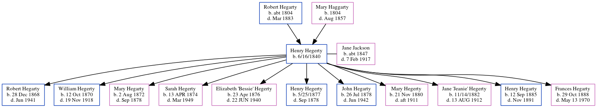

Henry Hegerty 1840 -
[ Home ] | [ Calendar ] | [ Surnames Index ] | [ Family History ]The child of Robert Hegarty and Mary Haggarty, Henry Hegerty was born in Belan, Moone, County Kildare, Ireland on 6/16/1840 and married Jane Jackson (with whom he had 11 children: Robert Jackson, William Henry, Mary, Sarah Anne, Elizabeth "Bessie", Henry, John Joseph, Mary, Jane "Jeanie", Henry Thomas and Frances Caroline) in Celbridge, Ireland in Sep 18871.
He died in Belan, Moone, County Kildare, Ireland.
Parents
- Robert was born c. 1804
- Mary was born in 1804
Children
- Robert Jackson was born on Dec 28, 1868
- William Henry was born on Oct 12, 1870
- Mary was born on Aug 2, 1872
- Sarah Anne was born on Apr 13, 1874
- Elizabeth "Bessie" was born on Apr 23, 1876
- Henry was born on 5/25/1877
- John Joseph was born on Jul 26, 1878
- Mary was born on Nov 21, 1880
- Jane "Jeanie" was born on 11/14/1882
- Henry Thomas was born on Sep 12, 1885
- Frances Caroline was born on Oct 29, 1888
Citations
- Ireland, Civil Registration Marriages Index, 1845-1958 Ancestry.com Operations, Inc.
Family Tree
Generated by ged2site. Last updated on Jun 24, 2024